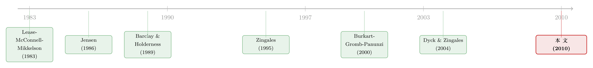

控制权的私利，到底值多少钱？——从一桩大宗股权交易的「砍价」里把它解出来
本文读的是 Albuquerque & Schroth (2010, Journal of Financial Economics)：作者把 Burkart-Gromb-Panunzi 的大宗股权定价模型搬到数据上做结构估计，第一次把「控制权私利」从被污染的大宗溢价里干净地解出来——私利约占目标公司股权价值的 3–4%、占整个交易区块价值的 10%，而且每 1 美元的私利，要让全体股东赔上约 1.76 美元的股权价值。
1 一把被「污染」了的尺子
先问一个看似简单的问题：当一个控股股东把手里那一大块（控制性的）股票，私下卖给另一个买家时，他到底卖了什么？
教科书的答案是「控制权」。而控制权之所以值钱，是因为坐上控制位的人能干两件事：一是把公司经营好，让所有股票都升值——这部分好处人人有份，叫 证券收益（security benefits）；二是把一部分本属于全体股东的现金流，悄悄塞进自己口袋——这部分好处只有控股股东独享，叫 控制权私利（private benefits of control）。后者正是公司治理研究最想量出来的那个数：它有多大，几乎就决定了一个国家的小股东被「掏空」得有多狠。
那怎么量？过去三十年，文献用的尺子是 大宗交易溢价（block premium）——即私下谈定的每股成交价，减去交易公告后交易所的收盘价（这个度量来自 Barclay & Holderness, 1989 的开山之作）。直觉很顺：买家愿意为这一大块股票多付的钱，不就是他预期能榨出的私利吗？
可这把尺子有三道裂缝，而本文的全部张力，就压在这三道裂缝上。
第一，尺子是脏的。 大宗溢价里混着两样东西：私利，和「换了个更能干的老板之后，股票本身的升值」。买家多付的钱，可能是冲着掏空去的，也可能仅仅是因为他真能把饼做大。Dyck & Zingales (2004) 用一个漂亮的、基于模型的调整把两者分了开来，但他们的做法是把「股票升值」当成给定的外生量——而真正麻烦的地方在于：私利和股价是此消彼长的。多掏一块钱进自己口袋，留给股票的现金流就少一块钱。把升值当外生，就回避了这个核心张力。
第二，尺子常常读出负数。 在美国，大宗交易频频出现 折价（block discount）——成交价低于公告后股价，而且折价的规模和比例都不小。以往文献怎么处理？把折价当成「溢价的一次低实现」，一并塞进同一个回归里。本文会告诉你：这样做会让私利的估计 系统性偏低，甚至变成负数——一个荒谬的结果。
第三，尺子只量了「卖出去的」那些。 我们只能在区块被交易的公司里观察到溢价，这天然有 样本选择（selection bias） 问题。
于是一个自然的问题是：能不能换一把尺子？本文的答案是——不要去「修正」那个被污染的溢价，而是写下一个完整的模型，让溢价、折价、股价冲击同时成为模型的内生产物，再用数据把模型背后那几个看不见的结构参数反推出来。 这就是结构估计的思路。
2 一个「砍价」的模型：BGP 框架
本文的骨架是 Burkart, Gromb & Panunzi (2000)（下称 BGP）的大宗定价模型。它的妙处在于：用一个统一的机制，同时生出溢价和折价。
2.1 角色与收益
把公司总股数标准化为 1。台上有两个人：
- 在位者 I（incumbent / seller）：手里握着一块少数控制性区块，规模 \(a < \tfrac{1}{2}\)；
- 挑战者 R（rival / buyer）：一股没有，但想买。
模型规定：谁持有规模 \(\geq a\) 的区块，谁就掌握控制权。控制人记为 \(X \in \{I, R\}\)，他治下公司的证券收益总值为 \(v_X\)。掌权后，他可以选择把比例 \(f \in [0,1]\) 的现金流转走，于是他拿到私利 \(d_X(f)\,v_X\)，而留给每股的价值是 \((1-f)\,v_X\)。函数 \(d_X(\cdot)\) 是「掏空技术」：转走得越多，私利越大，但 \(d_X\) 严格凹（Assumption 3：\(d_X\) 在 $[0,1]$ 上严格递增且严格凹，\(d_X(0)=0\)，\(d_X'(0)=1\)，\(d_X'(1)=0\)），意味着掏空的边际收益递减。
2.2 掏空多少？——核心的取舍
控制人 \(X\) 持有规模 \(a\) 的区块，他要选 \(f\) 来最大化「自己那块股票的价值 + 私利」。这正是整个模型的经济内核：
对 \(f\) 求一阶条件，\(v_X\) 约掉，立刻得到那个干净得出奇的方程：
$$a = d_X'(f^a_X) \qquad (1)$$
由于 \(d_X\) 严格凹，\(d_X'\) 严格递减，所以最优掏空率
$$f^a_X = d_X'^{-1}(a)$$
关于 \(a\) 是递减的。这就是著名的 Jensen 激励效应（Jensen's incentive effect）：区块越大，控股股东自己持有的现金流权越多，掏空就等于在掏自己的口袋，于是他反而更收敛。掏空的边际成本（\(a\)，每掏一单位损失自己 \(a\) 份股价）必须等于边际私利收益（\(d_X'\)）。把最优掏空率代回，记最优私利为 \(d^a_X \equiv d_X(f^a_X)\)。
2.3 一次成交，两个价格
如果区块被卖给了 R，公告后的股价反映 R 的掌权与掏空：\(P_1 = (1-f^a_R)\,v_R\)。而公告前（I 掌权下）的价格是 \(P_0 = (1-f^a_I)\,v_I\)。于是新闻公告带来的 股价冲击（price impact） 是：
$$\frac{P_1}{P_0} = \frac{(1-f^a_R)\,v_R}{(1-f^a_I)\,v_I} \qquad (2)$$
而 大宗溢价 就是成交价减去公告后股价。注意：股价冲击 $(2)$ 衡量的是「换老板」对所有股东的影响，它由掏空率 \(f^a\) 决定；而溢价衡量的是买卖双方在谈判桌上怎么分钱。两者携带的信息不同——这一点是后面识别的关键。
2.4 为什么会有折价？——「打不打得过」决定一切
BGP 真正特别的地方，是给私下谈判加了一个 备胎：如果谈崩，R 可以发起 要约收购（tender offer） 强行夺权。于是私下成交价，必然反映这个备胎的好坏。而备胎好不好，取决于一件事——在位者 I 顶不顶得住 R 的要约。
-
有效竞争（effective competition）：I 的证券收益足够高（\(v_I \geq (1-f^a_R)v_R\)），他能在要约里抬价反击。此时 BGP 证明（Proposition 1）：溢价一定为正。因为 R 想夺权，得开出足够高的价才能从分散股东手里收够票，I 至少能拿到这个「威胁价值」\(b^*\)，外加双方为了避免一场低效要约而省下的合作剩余里的一份。
-
无效竞争（ineffective competition）：I 的估值太低（\(v_I < (1-f^a_R)v_R\)），他根本打不过。这时分两种情形：Case I 里溢价恰好为零；而 Case II 里——溢价为负，也就是折价。原因相当反直觉：当 I 太弱，R 可以在要约里开出一个低于公告后股价的报价，I 居然还愿意接受，因为他握着的区块价值实在太低，接受低价也比死守要好。把这个低要约价倒推回谈判桌，私下成交价就被压到了公告价之下。
一句话记住这套机制：溢价还是折价，不取决于私利的多少，而取决于在位者「打不打得过」一场潜在的要约战。 这正是为什么不能把折价简单当成「低溢价」——它们背后是完全不同的均衡。
这套逻辑还顺手给出一个可检验的推论：既然私下谈判总优于要约，那么 针对存在少数控制性区块的公司的要约收购，应该是「均衡外」事件，几乎观察不到。作者拿这个预测先做了个预检：在 Thomson One Banker 里搜 1990/1/1 至 2006/8/31 美国的要约收购，共 1,677 起，剔除收购方已持股 ≥20% 的 547 起后，只剩 3 起目标公司存在 ≥10% 少数区块的交易——其中一起是私有化、两起被归为善意收购，没有一起是针对少数区块的敌意要约。漂亮地对上了 BGP 的预测。
（关于「大宗交易该长成什么形状」这个更微观的合约问题，可参见《看不见交易商的手：一份大宗交易合约该长成什么形状》；公司债市场里「谁来接盘」的对应问题，则见《谁来接住这一大笔债券？》。）
3 识别：三个看得见的，反推三个看不见的
现在到了 真正关键的一步。
模型里有三个看不见的内生变量：掏空率 \(f^a\)、私利 \(d^a\)、以及换老板带来的证券收益变化 \(v_R/v_I\)。而数据里有三个看得见的量：大宗溢价、股价冲击、区块规模 \(a\)。作者的识别策略，就是用前者去反推后者，构造一个 恰好识别（exactly identified） 的方程组。
具体怎么走？用一阶条件 $(1)$ 把掏空率和私利写成区块规模与公司特征的函数；用 $(2)$ 在给定掏空率下恢复证券收益的变化 \(v_R/v_I\)；最后消掉所有内生、不可观测的变量，得到一个 「大宗溢价 = 结构参数的函数」 的单一方程，拿去和数据里的溢价对账。
为什么这套反推是 well-defined 的？作者在附录里给出一个几何论证。在 \((v_R/v_I,\ d^a_R)\) 平面上画两条曲线：让股价冲击保持不变的「等股价冲击线」，和让溢价保持不变的「等溢价线」。两条都向上倾斜——要维持同样的股价冲击，更高的证券收益变化必须配上更高的私利。核心结论是：等股价冲击线比等溢价线更陡。 直觉是，股价冲击对私利（的绝对值）远比溢价敏感——因为股价冲击直接由掏空水平 \(f^a_R\) 决定，而溢价只取决于私下成交与要约两种情形下掏空率之差 \(f^a_R - f^b_R\)。两条斜率不同的曲线相交于唯一一点，就把 \(v_R/v_I\) 和 \(d^a_R\) 同时钉死了。
这就是结构方法相对于「修正溢价」的根本优势：它没有把股价升值当外生，而是 让私利和证券收益在同一个均衡里互相牵制着被解出来——既能给私利估计，也能直接估出「新老板创造的价值」和「卖方的谈判剩余」，这些都是降维回归做不到的。
4 数据
样本沿用 Dyck & Zingales (2004) 对私下大宗谈判的一整套筛选（确保交易的是控制性区块、剔除有白衣骑士或其他流动性提供者的交易，因为模型假设里没有这些角色），样本期为 1990 年至 2006 年的美国控制权交易。观测单位是单笔大宗交易，每笔交易都附带溢价/折价、股价冲击、区块规模，以及一组目标公司财务与治理特征。
5 主要结果：私利、死荷损失，与一条自由现金流的暗线
结果一：模型拟合了数据的关键特征。 数据里，当模型预测在位者「打得过」时，倾向于出现溢价；预测「打不过」时，倾向于出现折价。这正是 BGP 机制的指纹。
结果二：私利不小，但极度偏斜。 私利平均约占目标公司股权价值的 3–4%，或占整个交易区块价值的 10%。与 Dyck & Zingales (2004) 等研究不同，本文的估计 在统计上显著异于零。但平均数会骗人——分布 高度右偏：约 35% 的交易私利不到 0.1%，约 40% 不到 1%。也就是说，绝大多数控制权交易其实「挺干净」，少数极端案例把均值抬了上去。
结果三：第一次给出了死荷损失的估计。 掏空不是零和转移，它会扭曲经营、毁掉价值。本文估计：每 1 美元的私利，要让股东损失约 1.76 美元的股权价值。据作者所知，此前虽然无数理论模型（Pagano & Roell, 1998; Stulz, 2005）都在用「死荷损失」这个概念，却从没有人把它的大小估出来过。
结果四：控股股东并非只会掏空。 模型同时估出，区块易手时（在剥离私利之后）股价平均上升 19%。这说明 「谁来当控股股东」对公司价值真的重要——好的控制人确实在创造价值，而不只是在分赃。
结果五：一条指向 Jensen 的暗线。 把私利对公司特征做回归，作者发现：私利随 现金持有/总资产 上升，随 短期债务/总资产 下降，而且两个弹性的绝对值大小相近。现金越多、短债越少，控股股东越容易掏空——这正是 Jensen (1986) 自由现金流假说（free cash flow hypothesis） 的预测：闲置现金是代理问题的温床，而（短期）债务是约束管理层的缰绳。与以往「杠杆对私利效应方向不清」的混乱结论相比，这是相当干净的支持证据。此外，私利在以下情形更小：总资产高、过往股价表现差（大公司和差公司被盯得更紧）、无形资产占比低（呼应 Himmelberg, Hubbard & Palia, 1999）、以及国家层面治理更强时。
（这条自由现金流的暗线，与四十年后重读 Jensen 的那篇恰好互为印证，详见《现金为什么一定要「还」出去？——四十年后，重读 Jensen 的自由现金流》。）
结果六：买家其实在「溢付」。 相对 BGP 的基准价，收购方平均多付了目标公司价值的 2%–5%。这与以往文献（Barclay & Holderness, 1989; Dyck & Zingales, 2004）「买家不溢付」的结论相反。差异可能源于：以往检验只看买家是上市公司的子样本，而本文样本里，买家非上市公司的那批交易，溢价反而更大。
6 文献脉络
把这条线捋一捋，会看到一个清晰的「从代理到度量再到结构」的演进。
最早，Lease, McConnell & Mikkelson (1983) 就注意到「控制」本身在公开公司里是有市场价值的。真正把「大宗溢价」立为度量私利的标准尺子的，是 Barclay & Holderness (1989)；随后他们 (1991, 1992) 进一步把大宗交易与控制权转移、以及相关的法律问题串了起来。与此同时，Jensen (1986) 从代理成本的角度，给出了「为什么会有私利、什么样的公司私利更大」的理论根基。
接着，一个自然的问题是：除了大宗溢价，还有别的尺子吗？Zingales (1995) 用 投票权溢价（voting premium） 给出了另一条独立的度量路径，Nenova (2003) 把它推广到跨国比较。Dyck & Zingales (2004) 则集大成，既做了私利的国际比较，又提出了那个「基于模型调整大宗溢价」的优雅做法——但正如前文所说，它把股价升值当成了外生。

而 真正的转折点是 Burkart, Gromb & Panunzi (2000)：他们用「要约收购作为私下谈判的备胎」这一机制，第一次在统一框架里同时解释了溢价和折价。本文（Albuquerque & Schroth, 2010）站在 BGP 的肩膀上，做了前人没做的那一步——不是修正溢价，而是把 BGP 模型直接拿去做结构估计，让私利、证券收益变化、死荷损失一起被数据反推出来。这是这条脉络从「找代理变量」走向「写下并估计完整均衡模型」的关键一跃。
评论与延伸（Q&A + 研究方向）
(a) 几个可能的疑问
Q：结构估计相比 Dyck-Zingales 的「调整溢价」，到底强在哪？
强在它没把股价升值当外生。DZ 的调整把「换老板带来的升值」当作给定的输入，再从溢价里减去它；但本文让私利和证券收益变化在同一个均衡里互相牵制，由「等股价冲击线」与「等溢价线」的交点同时解出。结果之一是：本文的私利估计在统计上显著异于零，而 DZ 类估计常常做不到。
Q：折价为什么不能当成「低溢价」处理？
因为它们来自不同的均衡机制。溢价出现在「在位者打得过」的有效竞争里，折价只出现在「在位者太弱、连低于市价的要约都愿意接受」的 Case II 无效竞争里。把折价当成溢价的低实现塞进同一个回归，会让私利估计系统性偏低甚至变负——这恰恰是本文要纠正的。
Q：「每 1 美元私利毁掉 1.76 美元」这个数靠谱吗？
它完全依赖掏空技术 \(d_X(\cdot)\) 的函数形式假设（本文用一个灵活的、可估的凹函数族）。这是任何结构估计都逃不掉的依赖。好在作者对若干替代设定做了稳健性检验，并论证自己选的设定比竞争模型更能同时拟合溢价、折价和大幅股价变动。但读者应把 1.76 理解为「在该模型下的点估计」，而非模型无关的事实。
Q：买家「溢付 2–5%」会不会只是赢家诅咒，而非私利的对立面？
本文的「溢付」是相对 BGP 基准价定义的，衡量买家付得比模型预测的均衡价高多少。它与赢家诅咒并不互斥，但作者给出的一条线索是：非上市买家的样本里溢价更大，而以往拒绝「溢付假说」的检验恰恰偏重上市买家子样本。这提示结论差异可能来自样本构成，而不只是统计噪声。
Q：「要约收购是均衡外事件」这个检验，会不会只是因为筛选条件太严？
有这个风险。3 起 vs. 1,677 起的对比很有冲击力，但「≥10% 少数区块」「剔除已持股 ≥20%」这些阈值都是研究者设定的。换个阈值，命中数可能变化。不过方向上它与 BGP 的预测一致，作为一个 预检（preliminary test） 而非核心识别，份量是够的。
Q：模型假设「没有白衣骑士、不为流动性交易」，会不会把最有意思的样本筛掉了？
会，而这正是结构估计的代价。能进样本的交易必须符合模型设定，于是结论严格来说只对「控制性区块、非流动性动机、无第三方竞标」的那类交易成立。作者用 Dyck-Zingales 的筛选来逼近这个集合，但外部有效性确实受限——这是用「模型纪律」换「干净识别」的必然权衡。
(b) 几个可能的研究问题与提案
1. 把这套结构方法搬到公司债的大宗交易上。 - 【经济故事】股票大宗交易卖的是「控制权 + 私利」，那债券大宗交易卖的是什么？也许是「流动性 + 信息优势」。能否写一个对应的结构模型，把债券大宗的价格冲击拆成「流动性折让」与「信息溢价」？ - 【可行性】中。需要 TRACE 级别的债券逐笔成交与持有人数据；识别难点在于债券没有「控制权」这条主线，机制要重写。但「价格冲击反推不可观测信息」的思路可移植。
2. 用结构估计的私利，去解释外资持有人的进出。 - 【经济故事】如果某国控股股东私利高，外资是会被「便宜的资产」吸引，还是被「会被掏空」吓退？把本文逐公司的私利估计，接到跨国机构持仓面板上。 - 【可行性】中。私利估计需逐国重做（数据密集），但 FactSet/EPFR 的跨国持仓数据现成，可做「私利 → 外资份额」的面板回归，用治理改革做准自然实验。
3. 死荷损失的横截面：哪些公司掏空最「贵」？ - 【经济故事】1.76 是个平均数。是不是无形资产多、现金流难监督的公司，每 1 美元私利毁掉的价值更高？这直接关系到「该优先治理哪类公司」。 - 【可行性】高。本文已逐笔估出私利与证券收益变化，把死荷损失对公司特征回归即可，数据和方法都在手边。
4. 自由现金流暗线的因果化。 - 【经济故事】本文发现私利随现金升、随短债降，呼应 Jensen。但这是相关性。能否找一个外生改变公司现金或短债的冲击（如税改、强制分红规则），看私利是否真的随之变动？ - 【可行性】中。需要一个干净的外生事件 + 事件前后的大宗交易样本，后者在单一冲击窗口内可能样本量偏小。
我的判断
这篇论文的贡献，用一句话概括：它把「控制权私利」从一个永远被混杂、被偏误污染的代理变量，第一次变成了一个结构模型里可以被点估计、可以做假设检验的参数，并且顺带给出了文献用了二十年却从没量过的「死荷损失」。从「找尺子」到「写模型」的这一跳，方法论上的示范意义不亚于具体数字。
对识别，我的主要担忧有两处。其一是 函数形式依赖：1.76 美元、19% 升值这些漂亮的数，都吊在掏空技术 \(d_X(\cdot)\) 的凹函数假设上，作者做了稳健性但终究无法摆脱「模型对了，估计才对」的循环。其二是 样本的窄：能进模型的交易必须没有白衣骑士、不为流动性、且区块确实控制性——这恰恰可能筛掉了私利最极端的那些案例，让分布的右尾被低估。
后续我最想看到的，是把这套结构机器接到 退出端：今天我们能估出「卖出时」的私利，但更想知道私利如何随时间动态演化、外资与机构持有人如何对私利定价、以及一国治理改革到底压下了死荷损失的哪一部分。把「控制权私利」从一个静态的横截面数字，做成一条会呼吸的动态曲线——那将是这条脉络真正的下一站。
参考文献
Albuquerque, R., & Schroth, E. (2010). Quantifying private benefits of control from a structural model of block trades. Journal of Financial Economics 96(1), 33–55.
Barclay, M., & Holderness, C. (1989). Private benefits from control of public corporations. Journal of Financial Economics 25(2), 371–395.
Barclay, M., & Holderness, C. (1991). Negotiated block trades and corporate control. Journal of Finance 46(3), 861–878.
Barclay, M., & Holderness, C. (1992). The law and large-block trades. Journal of Law and Economics 35(2), 265–294.
Burkart, M., Gromb, D., & Panunzi, F. (2000). Agency conflicts in public and negotiated transfers of corporate control. Journal of Finance 55(2), 647–677.
Dyck, A., & Zingales, L. (2004). Private benefits of control: An international comparison. Journal of Finance 59(2), 537–599.
Himmelberg, C., Hubbard, G., & Palia, D. (1999). Understanding the determinants of managerial ownership and the link between ownership and performance. Journal of Financial Economics 53(3), 353–384.
Jensen, M. (1986). Agency costs of free cash flow, corporate finance, and takeovers. American Economic Review 76(2), 323–329.
Lease, R., McConnell, J., & Mikkelson, W. (1983). The market value of control in publicly traded corporations. Journal of Financial Economics 11(1–4), 439–471.
Nenova, T. (2003). The value of corporate voting rights and control: A cross-country analysis. Journal of Financial Economics 68(3), 325–351.
Zingales, L. (1995). What determines the value of corporate votes? Quarterly Journal of Economics 110(4), 1047–1073.